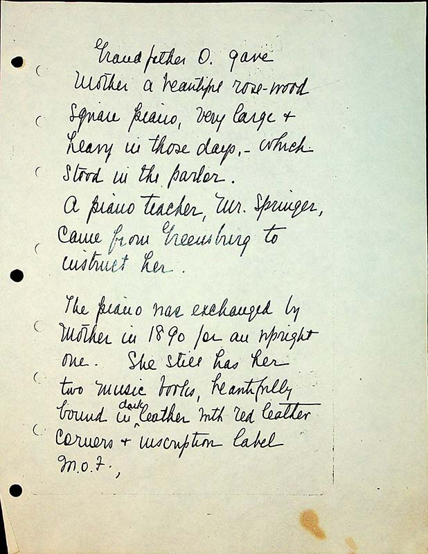

Grandfather O gave Mother a beautiful rose-wood square piano, very large & heavy in those days.- which stood in the parlor.
A piano teacher, Mr. Springer, came from Greensburg to instruct her.
The piano was exchanged by Mother in 1890 for an upright one. She still has her two music books, beautifully bound in dark leather with red leather corners & inscription label M.O. F